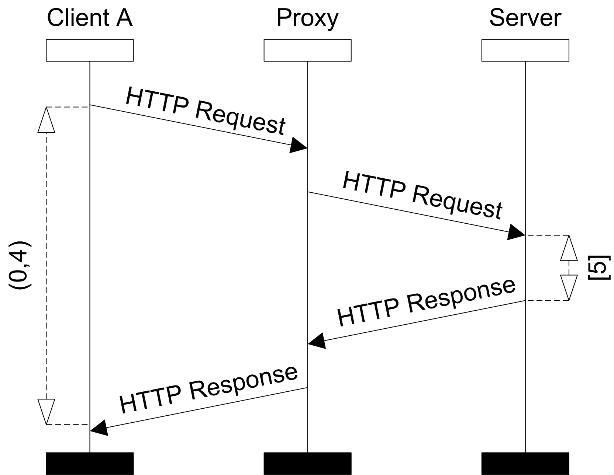
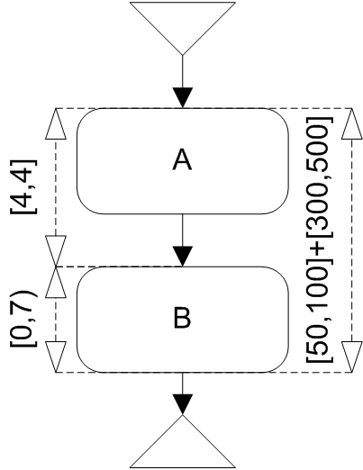

Time Consistency
Time consistency is a problem of deciding whether introduced time constraints in a given MSC are in conflict. MSC is time consistent if it is without such conflicting time constraints.
The motivation for time consistency is following. It can easily happen that user can specify too restrictive time constraints and cause that the set of behaviors is empty. The time consistency property checks such situations.
Basic Message Sequence Chart
Time consistent property is violated for BMSC B when there is no valid time assignment for B.
The time assignment for BMSC (resp. HMSC path) is an assignment of time value to every event, such that it satisfies all constraints in a given BMSC (resp. HMSC path). I.e. for every constraint which restricts two events, the difference of values assigned by assignment to these events must be included in the interval set of this constraint.
An example of a time consistent BMSC is depicted on the next picture.
-
- 
- Time inconsistent BMSC
High-level MSC
HMSC violates time consistent property if exists path from start node to end node for which there is no time assignment.
An example of time inconsistent HMSC is depicted on the next picture. The inconsistency follows from the fact that the two inner constraints are too short compared to the outer constraint. That is why it is not possible for the events in the HMSC to satisfy all constraints.
-
- 
- Time inconsistent HMSC